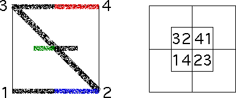

|
| As the lag time increases to a week, the familiar backwards Z pattern appears, suggesting
that most movement occurs between consecutive bins. |
| A second feature of the week lag plots is the concentration of points in the 1
corner and in the 4 corner. Thornton speculates the presence of many consecutive
weekly changes of more than one standard deviation may result from the effects of
day-to-day corrections making consecutive large positive or negative daily changes
unlikely. |
|  |
| The final observation is the middle crossing of the backward Z. Looking
at the addresses of the regions occupied middle cross, we see the
green part of the middle cross could come
from either |
| applying T1 to points in the red part
of the line between corners 3 and 4, or |
| applying T3 to points in the blue part
of the line between corners 1 and 2. |
|
| Because square 14 contains few points, the second choice is more strongly indicated. |
| The blue points are generated by all
combinations of T1 and T2, with the last being T2. With
this longer lag time, these combinations can be followed by T3. |